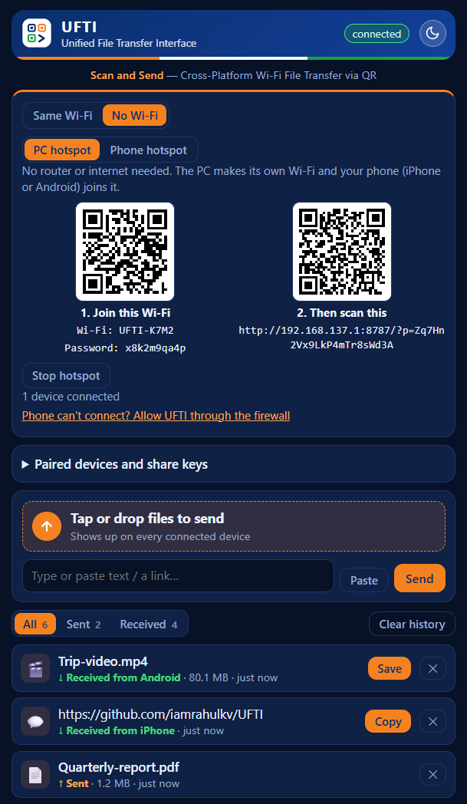
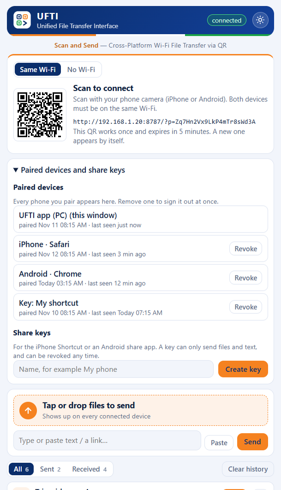

Mac and iPhone users have AirDrop. Windows and iPhone users email photos to themselves, upload them to a cloud drive, hunt for a cable, or send them through a chat app that shrinks them.
Apple does not let third-party apps send files to Windows over Bluetooth, so nothing can copy AirDrop exactly. UFTI takes a different route. It uses the one thing every PC and phone already share: a network.
From install to first transfer in about a minute
Install on your PC
Download the Windows installer from the latest release and run it. Allow network access when Windows asks.
Open UFTI
The window shows a QR code. Both devices should be on the same Wi-Fi.
Scan with your phone
Use the Camera app (iPhone) or Google Lens (Android) and open the link. UFTI loads in the phone's browser.
Send and receive
Tap the send area, pick files, or paste text. Items appear on both screens at once. Use Save or Copy on what you receive.
You scan once. The phone remembers the pairing until you remove it. If Windows SmartScreen warns you on first run, choose More info, then Run anyway (the installer is not code-signed yet).
It can make its own network
AirDrop works in a train station or a hotel with bad internet. So does UFTI. Switch the Connect card to No Wi-Fi and pick a hotspot.
- PC hotspot. One click, and the PC creates a Wi-Fi network. Scan the first QR code to join it and the second to open UFTI.
- Phone hotspot. Turn on Personal Hotspot on an iPhone (or an Android hotspot), connect the PC by Wi-Fi or USB, and UFTI shows the right QR code.
Transfers never use mobile data or the internet.

Only devices you paired can get in
Your files go directly between your devices. There is no cloud server, no sign-up and no tracking.
- Each QR code works once and expires after five minutes.
- Every paired phone is listed on the PC. Remove any of them with one tap.
- Share keys for iPhone Shortcuts and Android share apps can send files and text, and nothing else.
Traffic on a local network is not encrypted, so avoid public Wi-Fi. On a network you do not trust, use the PC hotspot mode.

Small details that make it pleasant
Both directions
PC to phone and phone to PC, with live progress bars.
Any file size
Files stream straight to disk, so a multi-gigabyte video works.
Copy without saving
Copy a received photo and paste it into a chat or a Word document.
Text and links
Send a URL or a note and copy it with one tap.
History on both sides
All, Sent and Received tabs with times. Clear them whenever you like.
Share button
Add "Send to PC" to the iPhone share sheet with a free iOS Shortcut. Android works with a share app.
iPhone app
Let the iPhone host UFTI, or scan another UFTI's QR code inside the app with no browser.
Light and dark
One tap on the sun or moon button, and it remembers your choice.
Lives in the tray
Close the window and UFTI keeps listening. Start it with Windows if you want.
Before you ask
Is this the same as AirDrop?
No. AirDrop uses Bluetooth and Wi-Fi between Apple devices. UFTI needs a shared network or a hotspot and a one-time QR scan, and it works between Windows and phones. For two Apple devices, use AirDrop.
Does it need the internet?
No. Both devices only need to be on the same network. The No Wi-Fi mode creates one for you, and transfers never use mobile data.
Do I need to install anything on the phone?
No. The phone opens UFTI as a web page in its own browser. You can add it to the Home Screen for an app icon.
Does it work with Android, Mac or iPad?
Yes for Android, and any device with a modern browser can open the pairing link, including a Mac, an iPad or another PC. The desktop app itself is for Windows 11.
Is it safe on public Wi-Fi?
Not recommended, because traffic on the local network is not encrypted. Pairing is one-time and you can remove any device, but on a network you do not trust, use the PC hotspot mode.
Why is there no App Store app?
An App Store app needs a paid Apple developer account, and the web page already works with nothing to install. There is an iPhone app you can install yourself with a free Apple ID. The repository has a step-by-step guide.
Windows says the app is unrecognised. Is it safe?
The installer is not code-signed yet, so SmartScreen shows a warning. Choose More info, then Run anyway. The full source code is public on GitHub if you want to check it.
Stop emailing yourself photos
UFTI is free and open source under the MIT license.